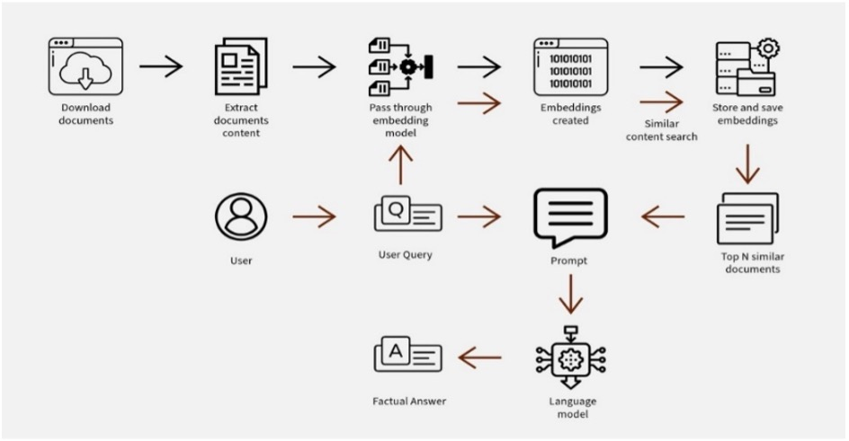
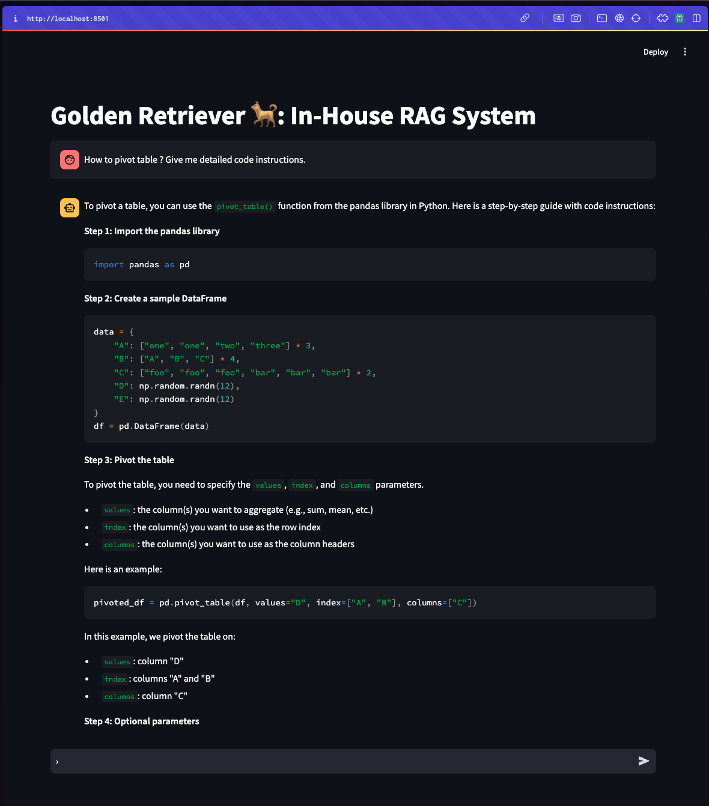

In today’s data-driven world, data science teams are the engines powering innovation, driving insights, and enabling informed decision-making across industries. As the complexity and volume of data continue to grow, so does the need for tools that streamline workflows and enhance productivity. Enter the in-house Retrieval-Augmented Generation (RAG) system, a pioneering solution designed to elevate the efficiency of data science teams. Unlike other RAG systems that rely on internet connectivity to fetch data, this system uses pre-downloaded information from key data science libraries, ensuring data privacy and security are maintained.
In this blog post, we’ll explore how an in-house RAG system can leverage documentation from popular data science libraries to boost productivity of data scientists. We’ll delve into its methodology, discuss the dataset it utilizes, examine its evaluation process, explore its user interface, and consider its potential impact on data science teams. Join us as we uncover how this innovative tool can revolutionize data science operations.
Introduction:
Imagine you’re a data scientist working on a crucial project with a tight deadline. You hit a roadblock: a burning question about how to efficiently aggregate data in Pandas. Naturally, you turn to ChatGPT or similar AI services to get quick answers and move forward. These tools have become indispensable for professionals seeking instant solutions to technical queries and coding challenges, helping streamline workflows and accelerate progress. However, while these AI services are immensely beneficial, they also come with significant challenges, particularly around data privacy, data relevance, and integration with proprietary tools. Furthermore, services like ChatGPT often fall short by not providing references alongside their answers. This lack of direct citations can hinder deeper research and verification of solutions, making it challenging to confirm the effectiveness of the advice given.
Enter RAGs!!!
What is a RAG?
A Retrieval-Augmented Generation (RAG) system is a sophisticated AI tool that combines the capabilities of retrieving specific, relevant information from a predefined database with the generative power to provide coherent, contextually appropriate responses. Unlike standalone language models that depend solely on their training data, RAG systems augment their responses by accessing external sources, making them particularly valuable in technical fields like data science, where accuracy and timeliness of information are crucial. As companies seek more secure and customized solutions, RAG systems, such as those offered by platforms like You.com, are increasingly being recognized as viable alternatives to traditional AI services like ChatGPT.

The Necessity for an In-House RAG System:
In addition to the absence of citation capabilities, privacy concerns are paramount when using services like ChatGPT. Companies are naturally cautious about sending sensitive data to external servers, such as those managed by OpenAI, due to the risk of data exposure and leakage. This creates a substantial barrier for organizations with strict data privacy policies.
Moreover, there are other challenges associated with using such services for technical queries:
- Data Freshness and Relevance: These services may not always provide the most up-to-date information, as they rely on static datasets that can overlook the latest updates in technical documentation and library features.
- Complex Query Handling: While effective for general inquiries, these tools can struggle with complex or highly specific technical queries, often producing generic responses that may not fully address the user’s needs.
- Integration with Proprietary Tools: Public AI services cannot accommodate the unique requirements of proprietary data science packages, limiting their effectiveness in customized workflows.
Golden Retriever:
In this blog post, we will explore the importance and various aspects of an in-house Retrieval-Augmented Generation (RAG) system through the implementation of the Golden Retriever project. Built to meet the unique needs of data science teams, Golden Retriever works primarily on a local server, meaning it doesn’t need internet access to function. This ensures strong data privacy. The system uses pre-downloaded data from essential libraries to deliver accurate, personalized, and reference-rich responses. With its easy-to-use Streamlit interface and modular design, Golden Retriever is adaptable and scalable, making it an effective tool for maintaining up-to-date information and integrating proprietary tools.
Methodology:
Our in-house Retrieval-Augmented Generation (RAG) system employs a sophisticated methodology to deliver accurate and context-rich responses for data science teams. Here’s a brief overview of our approach:
Document Preprocessing: We extract and clean data from popular data science libraries like
Pandas,NumPy, andScikit-learnusing tools such as BSHTMLLoader and BeautifulSoup. This refined content is then stored as pickle files for efficient processing.Embedding and Vector Storage: The preprocessed documents are chunked and embedded using the
gte-large-en-v1.5model. These embeddings are stored in ChromaDB vector databases, enabling rapid and accurate information retrieval.Advanced Query Processing: Our system utilizes intelligent query processing techniques to understand complex technical queries and retrieve relevant documents.
Output Generation: We leverage the powerful
llama-3.1-70bgenerative model to produce high-quality, tailored responses. The system combines retrieved documents with a prompt to generate comprehensive answers while also providing relevant document links as references.Offline Functionality: Designed to operate without internet connectivity, our RAG system is ideal for secure or isolated environments, ensuring data privacy and accessibility.
Dataset and Document Preprocessing:
This project utilizes a comprehensive dataset derived from the documentation of three widely-used data science libraries: Pandas, Scikit-learn, and NumPy. To create this dataset, we employ a fairly straightforward data acquisition process. Using the Python requests module, we download all the zipped documentation files for each library from their respective official sources. These compressed files are then systematically extracted, and the relevant text content is saved into a dedicated documents folder. This approach ensures that the RAG system has access to the most up-to-date and accurate information from these essential libraries. By incorporating documentation from these diverse sources, the system can provide comprehensive and context-rich responses to a wide range of data science queries, all while operating in an offline environment.
The document preprocessing stage is a crucial step in our RAG system’s pipeline. After downloading the documentation files, we employ a sophisticated approach to extract and refine the content of the input files. Using the BSHTMLLoader from Langchain, we parse the HTML files from the documentation. This loader efficiently extracts the relevant text content while preserving the structure. To further clean and optimize the extracted data, we utilize BeautifulSoup, which helps remove unnecessary HTML tags and formatting. This dual-layer approach ensures comprehensive content coverage while enabling detailed indexing. Finally, we store the preprocessed documents as pickle files, which allows for efficient storage and quick retrieval in subsequent stages of the RAG pipeline.
This meticulous preprocessing ensures that our system works with clean, well-structured data, ultimately enhancing the quality and relevance of the generated responses.
Vector Embeddings and Document Retrieval:
The next step in our RAG pipeline is to transform the preprocessed documents into searchable vector representations. We begin by loading the previously saved pickle files, which contain cleaned and structured content from popular data science libraries.
For generating embeddings, we leverage the gte-large-en-v1.5 model from Hugging Face, chosen for its superior ability to capture semantic relationships within technical documentation. The loaded documents undergo further processing using RecursiveCharacterTextSplitter, creating a dual-layer structure of parent documents (2000 characters with 200-character overlap) and child documents (500 characters with 50-character overlap). This approach ensures extensive content coverage while enabling detailed indexing.The RecursiveCharacterTextSplitter is particularly advantageous for our RAG system as it intelligently splits text based on character count while respecting the inherent structure of the document. It recursively splits on a list of characters (like “”, “”, ” “,”“) which helps maintain the semantic coherence of the content.
To facilitate efficient similarity searching, we implement ParentDocumentRetriever. It enables us to maintain broader context through parent documents while allowing for granular searches in child documents. This takes advantage of the hierarchical structure of our chunked documents, allowing for rapid and accurate retrieval of relevant information. The generated embeddings are then stored in ChromaDB vector database, enabling fast retrieval during query processing.
This carefully designed embedding and retrieval process forms the backbone of our RAG system. By transforming our extensive documentation into a searchable vector space, we ensure quick access to contextually relevant information that the LLM uses to generate an answer for the user query.
Prompting and Output Generation:
The prompting and output generation process in our RAG system is a sophisticated orchestration of several key components. At the heart of this process is a custom memory system that stores conversation history using a simple yet effective list structure. This way the system is able to maintain context across multiple interactions without relying on external databases, ensuring seamless and coherent conversations even in offline environments.
The system’s document retrieval process is powered by the ParentDocumentRetriever, which performs a similarity search to fetch the top 4 most relevant documents. After searching for the relevant information, the system creates a customized prompt which is fed to the LLM.
A carefully crafted prompt template serves as the blueprint for response generation. This template ingeniously combines the user’s query, conversation history, and retrieved documents, providing a comprehensive context to the language model. By structuring the input in this way, we guide the model to produce responses that are not only accurate but also contextually appropriate and coherent with previous interactions.
For the actual response generation, we leverage the power of the Llama 3.1 70B model through the Groq API. This API allows us to harness state-of-the-art language models while benefiting from cloud-based processing speed, crucial for maintaining system responsiveness. The generated output then undergoes custom post-processing to include relevant document links which the users can reference.
The system’s conversational loop ties all these elements together, enabling multi-turn interactions that maintain context throughout the conversation. This feature is particularly valuable for data scientists dealing with complex queries that often require follow-up questions or clarifications.
User Interface:
The Golden Retriever RAG system features a user-friendly interface built using Streamlit, providing an intuitive way for users to interact with the powerful RAG capabilities. This interface seamlessly integrates various components of the system, offering a clean, chat-like experience where users can input queries and receive detailed responses.
The Streamlit app first loads all the pre-processed documents and embeddings, setting up the RAG pipeline including the ParentDocumentRetriever and language model. As users interact with the system, their queries are processed through this pipeline, retrieving relevant documents and generating responses using the Llama 3.1 70B model via the Groq API. The interface displays these results along with reference links, ensuring traceability to source documentation.
A key feature of the interface is its ability to manage conversation history, allowing for coherent multi-turn interactions. By presenting sophisticated RAG technology through a simple, accessible interface, the Golden Retriever system enhances workflow efficiency for data scientists.

Conclusion:
Imagine Sarah, a data scientist who frequently finds herself scouring Pandas documentation to refresh her memory on data frame aggregation techniques. With the Golden Retriever RAG system at her fingertips, Sarah can quickly access accurate, context-aware information without leaving her secure work environment. Instead of spending precious time navigating through multiple web pages, she can simply ask the system, “How do I aggregate data frames by multiple columns in Pandas?” and receive a concise, tailored response with relevant code snippets and documentation links.
Now consider Alex, a junior data scientist tasked with building his first sentiment analysis system using the company’s proprietary NLP package. As he delves into this complex project, he encounters a myriad of questions: “What’s the best way to pre-process text data for sentiment analysis?” “How do I handle imbalanced classes in my sentiment dataset?” “Which machine learning models are most effective for sentiment classification?” With each query, the Golden Retriever system provides Alex with comprehensive answers, drawing from its vast knowledge base of Scikit-learn, NLTK, and the in-house libraries. The system not only offers explanations but also suggests best practices, potential pitfalls to avoid, and even code examples to jumpstart his implementation.
By leveraging the RAG system, both Sarah and Alex can work more efficiently, spending less time searching for information and more time applying their expertise to solve complex data science challenges.
In conclusion, our in-house Retrieval-Augmented Generation (RAG) system, Golden Retriever, represents a significant leap forward in empowering data science teams with efficient, accurate, and context-aware information retrieval. By leveraging advanced technologies such as state-of-the-art embedding models, intelligent document preprocessing, and powerful language models, we’ve created a system that operates seamlessly in offline environments while providing high-quality responses.
Check out the full project here.